Isabelle
Gérante du salon
25 ans de métier, CAP et BP. Avec le sourire et la gentillesse, Isabelle est à votre écoute pour vous conseiller et prendre soin de vos cheveux.
Certificat KYDRA THÉRAPEUTE.
Coiffure · Nature · Bien-être
Votre salon de coiffure à Tharon-Plage. Un lieu chaleureux où l'on prend soin de vos cheveux dans la bonne humeur, l'écoute et la convivialité.
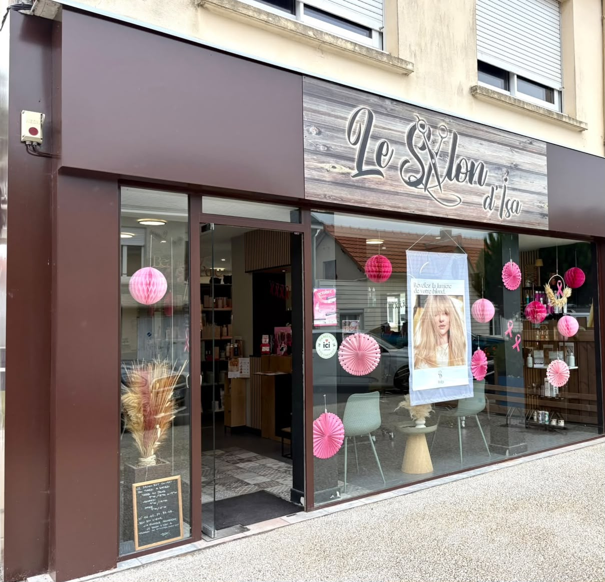
Bienvenue chez nous
Femmes, hommes et enfants, toute la famille est la bienvenue ! Nous aimons le contact humain, les échanges et les sourires. Notre plaisir : vous écouter, comprendre vos envies et vous accueillir dans une ambiance simple et conviviale.
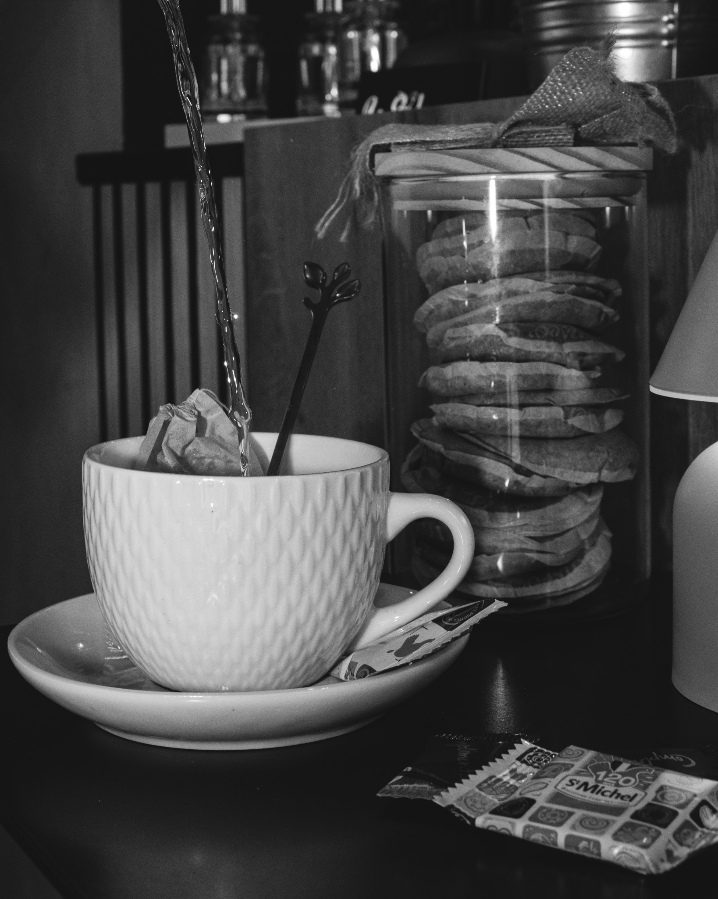
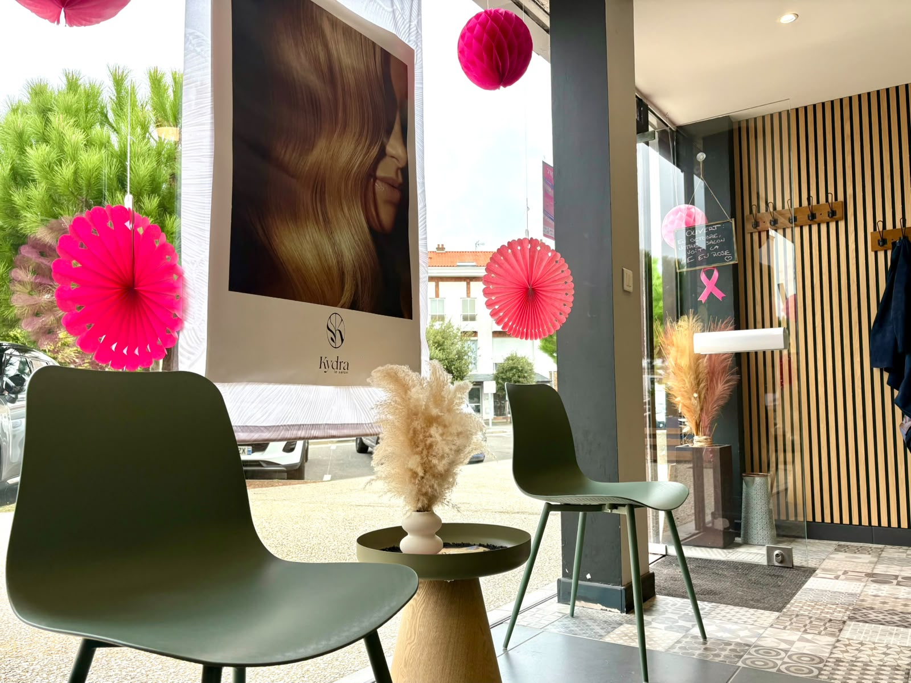
Découvrez notre univers
Un espace chaleureux, une décoration soignée et une équipe attentive à chaque détail.
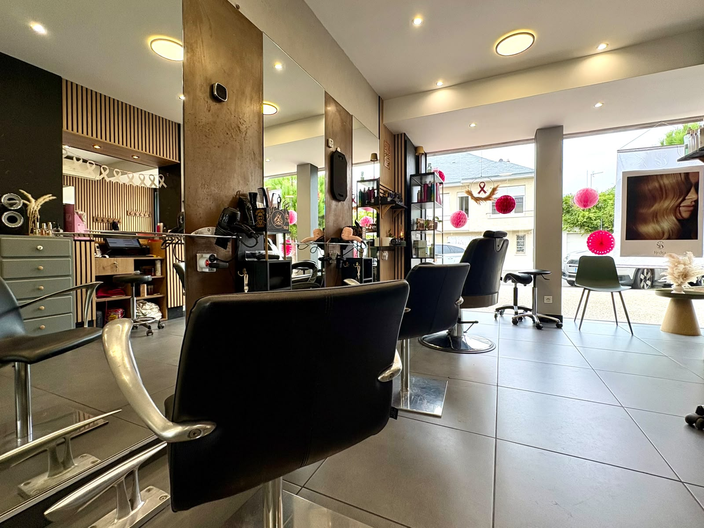
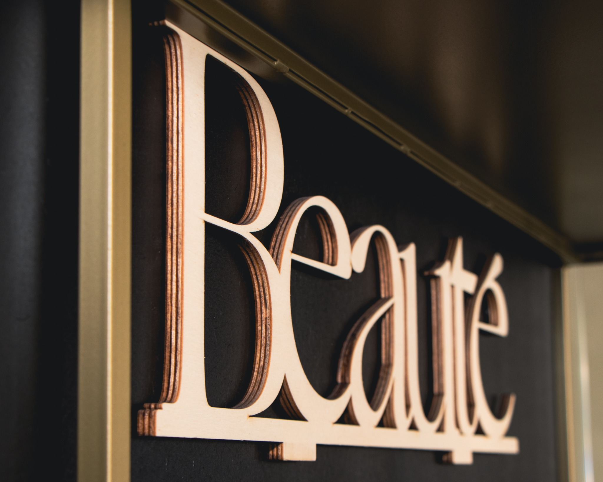
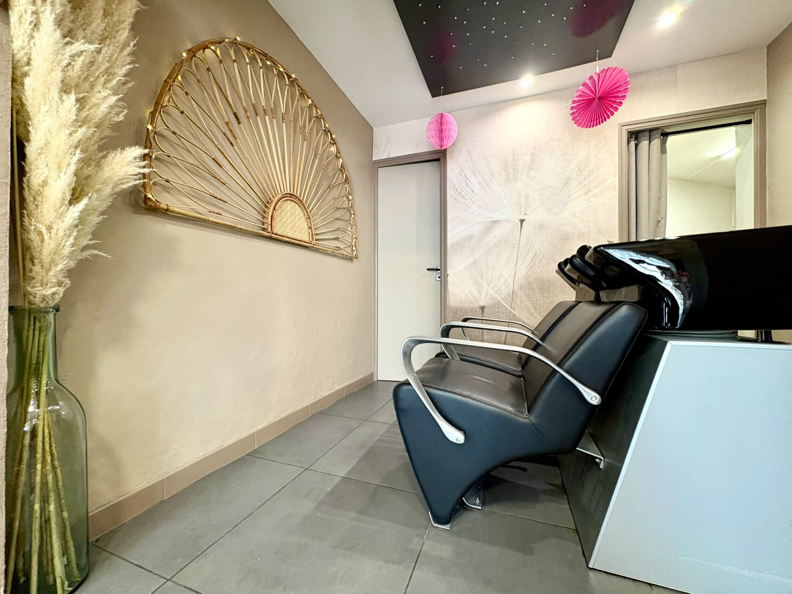
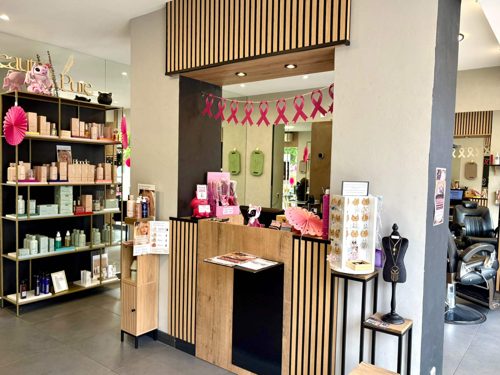
La passion du métier
Chaque geste compte : écoute, précision et attention pour réaliser une coupe adaptée à vos envies.
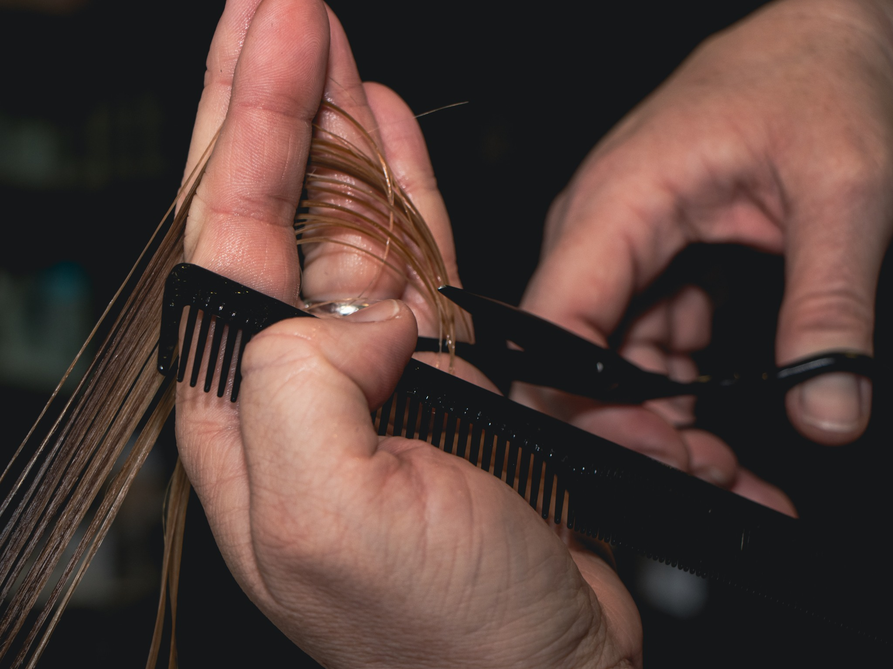
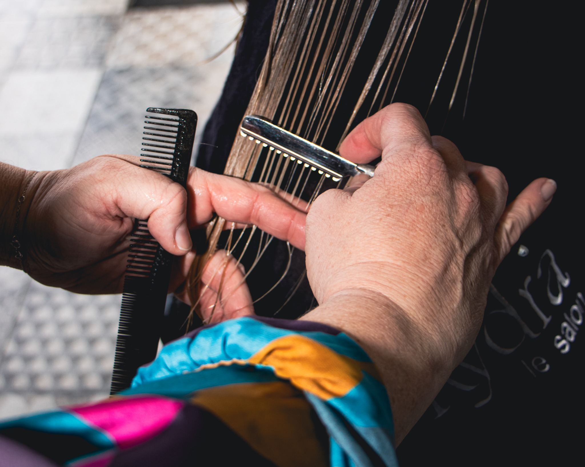
Des mains expertes, un accueil chaleureux
Du savoir-faire, de l'expérience et le plaisir de vous recevoir.
Gérante du salon
25 ans de métier, CAP et BP. Avec le sourire et la gentillesse, Isabelle est à votre écoute pour vous conseiller et prendre soin de vos cheveux.
Certificat KYDRA THÉRAPEUTE.
20 ans de métier, CAP et BP.
Avec le sourire et la gentillesse, Élodie met son savoir-faire au service de vos envies.
Certificat KYDRA THÉRAPEUTE.
En troisième année de formation.
Souriant et attentionné, Clément vous accueille avec gentillesse. Il continue à développer ses compétences et prépare une mention complémentaire.
Notre univers capillaire
J'affectionne particulièrement l'univers KYDRA, son savoir-faire français, ses parfums délicats et son approche sensorielle du soin. Jasmin, patchouli, infusion de calendula… autant de senteurs qui rendent le soin des cheveux encore plus agréable.
Des produits choisis pour accompagner votre routine capillaire et prendre soin de vos cheveux.
Une approche inspirée du végétal, avec des pigments tinctoriaux comme la bourdaine ou le genêt.
Nous prenons en compte vos envies, la nature de vos cheveux et les besoins de votre cuir chevelu pour vous conseiller.
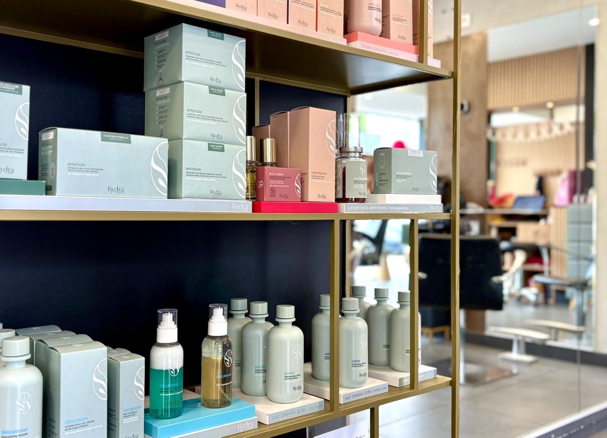
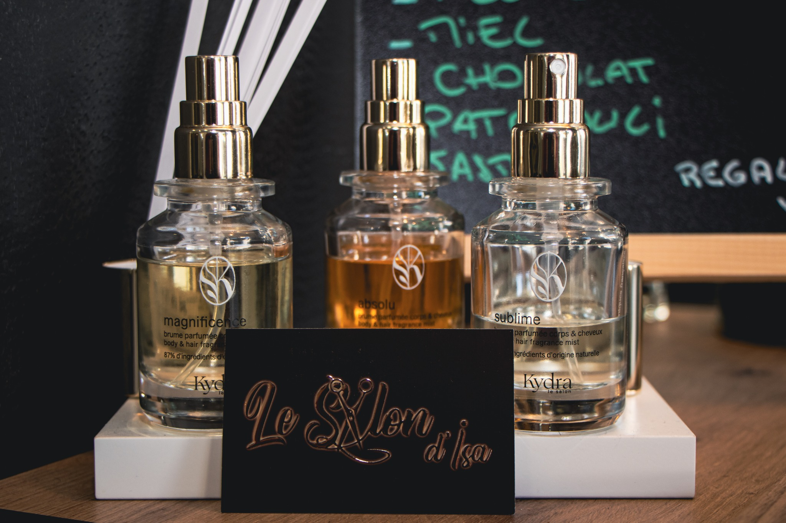
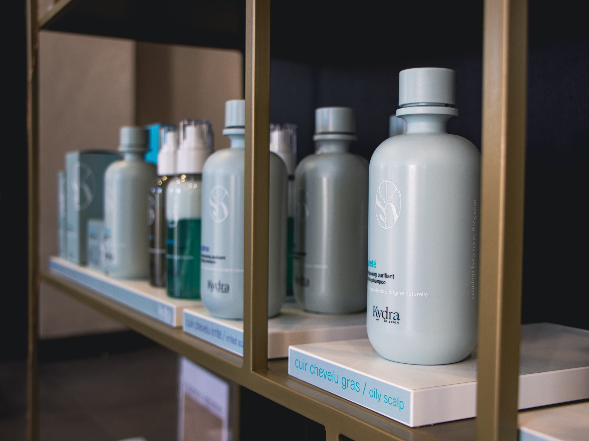
Les résultats et les soins adaptés dépendent de votre chevelure et du diagnostic réalisé au salon.
Bientôt au salon
Un nouveau service vous sera prochainement proposé au Salon d'Isa. Restez attentifs pour découvrir cette nouveauté !
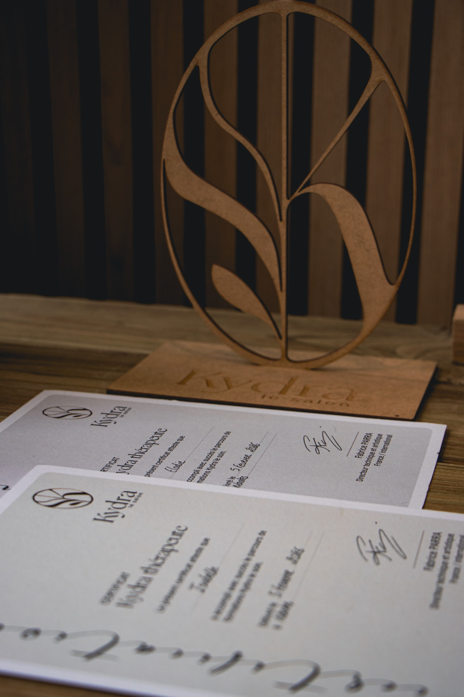
Votre prochain rendez-vous
Choisissez votre prestation et votre créneau directement avec Planity.
Nous serons ravis de vous accueillir
Le Salon d'Isa vous accueille au cœur de Tharon-Plage.
56 avenue de la Convention
44730 Tharon-Plage
Mardi
9 h – 19 h
Mercredi
9 h – 19 h
Jeudi
9 h – 18 h
Vendredi
9 h – 19 h
Samedi
9 h – 15 h
Fermé le dimanche et le lundi.
Prenez rendez-vous directement en ligne ci-dessous avec Planity, ou appelez-nous au salon.
Réservez votre prochain rendez-vous au Salon d'Isa !
Les horaires sont présentés selon les informations communiquées. Pensez à nous appeler pour confirmer un créneau.